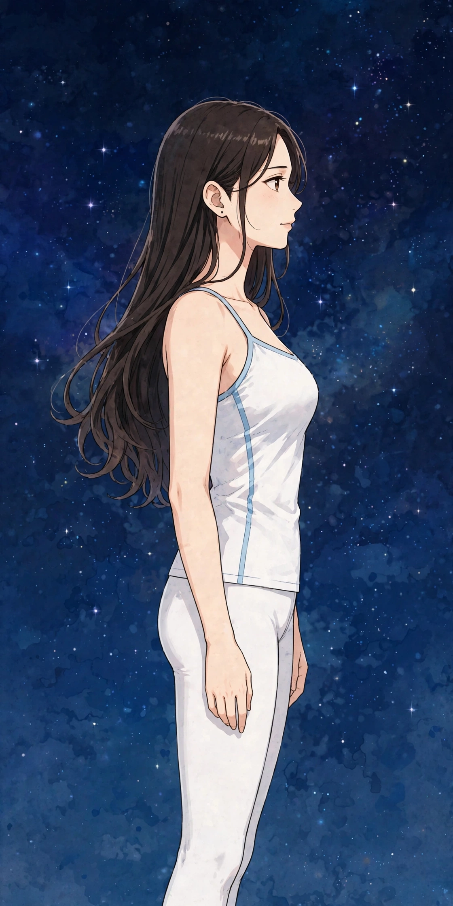

新大阪で姿勢の崩れケア姿勢・美容

御堂筋線の混雑で片側に寄って立ったり、オフィスで長時間同じ椅子に座ったり。新大阪・西中島エリアで働く方の毎日は、立つ・座る・歩くのクセが少しずつ積み重なります。肩や腰の重さが取れにくいとき、その背景には姿勢の土台の崩れがあるかもしれません。ここでは仕組みと整え方をまとめます。自分のクセを知ることから始める整え方を、わかりやすくご紹介しますので、ぜひ最後までご覧ください。
東洋医学から見た考え方
良い姿勢とは、骨の配列に沿って少ない筋力で体を支えられている状態をいいます。骨盤が前や後ろへ傾いたり、頭が前に出たりすると、一部の筋肉だけが頑張り続け、別の筋肉は働く機会を失って、こりや張り、疲れやすさにつながります。通勤で片方の肩に重いバッグをかけ続ける習慣や、足を組むクセも左右差を広げる要因です。東洋医学では体の中心の巡りが整うことを重視し、土台が整うことで全身の巡りも保ちやすくなると考えます。日々の積み重ねが姿勢を作るからこそ、気づいて直す習慣が大切です。さらに、疲労がたまった日ほど姿勢を支える筋肉は働きにくくなり、崩れが進むという悪循環も起こりやすくなります。だからこそ、硬くなった部分をほぐして動かしやすくすることと、日常で戻す意識を持つことの両方が欠かせません。
関係する部位の目安は、図1のとおりです。
図1｜姿勢の印象に関わる背中・骨盤・脚（横向き）

当店でのケア
おすすめ：オイルマッサージ＋美容整体
ステラカストル新大阪では、美容整体で立ち姿と座り姿のクセ、骨盤と肩の高さを確認し、崩れの背景にある硬さをオイルマッサージでほぐしていきます。固まった腰や背中、胸まわりをゆるめることで、無理なく姿勢を保ちやすい土台を目指します。新大阪で仕事帰りに立ち寄れる夜の時間帯（17:00〜22:00）に受けられる90分10,000円（税込）のコースで、施術後には電車やデスクで意識しやすい立ち方・座り方のポイントもお伝えします。その日の体の状態に合わせて圧や進め方を調整し、無理のない範囲で土台を整えます。施術後には鏡で立ち姿を確認しながら、ご自身でも変化を感じていただけるよう丁寧にご案内します。出張や旅行の前後で体のバランスが気になるときにも、リセットの機会としてご利用いただけます。
当店の施術は、気になる部分だけをなでるのではなく、つながりのある部位まで含めて深い圧でほぐし、巡りを促しながら整えていくのが持ち味です。施術のあとに「体が軽い」「すっきりした」と感じていただける状態を目指して、90分を組み立てます。
ご自宅でのセルフケア
朝の身支度のときに鏡で肩の高さと頭の位置をチェックする習慣から始めましょう。電車ではバッグを持つ手を時々替え、両足に均等に体重を乗せて立つこと。デスクでは足裏を床につけ、骨盤を立てて深く腰掛けるのが基本です。一度に完璧を目指さず、崩れたら戻す、を繰り返すことで姿勢は少しずつ整っていきます。画面の高さを目線に合わせる工夫も有効です。外出先では、エスカレーターではなく階段を選ぶ日を作るなど、体を動かす機会を少し増やすことも姿勢を支える筋力を保つ助けになります。完璧を求めず、続けることを優先しましょう。
セルフケアで意識したい場所と動きは、図2のとおりです。
図2｜立ち姿を整えるセルフケア（横向き）
キーワード：姿勢立ち姿歩き方バランス
姿勢の崩れのケアは90分 10,000円（税込）。ご予約はLINE公式アカウントから承っています。